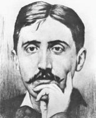

(1871 – 1922)

"Kayıp Zamanın İzinde" yedi ciltten ve 1,5 milyondan fazla sözcükten oluşan dev bir romandır. Kendinden sonra gelen birçok yazarın andığı, göndermeler yaptığı ve esinlendiği bu roman, Marcel Proust'un hayatı boyunca yazdığı bir romandı. Ölmeseydi belki daha da devam edecekti.
Yirminci yüzyılın en büyük romancılarından biri kabul edilen ve tam adı "Valentin Louis Georges Eugène Marcel Proust" olan Marcel Proust (okunuşu: Marsel Prust), 10 Temmuz 1871 tarihinde Paris'in güney yakasında, Auteuil'de doğdu. Doğumu, Paris yönetiminin baskılanması sonucu çıkan şiddet ortamında gerçekleşti ve çocukluğu Üçüncü Cumhuriyetçiler'in göreve geldiği dönemde geçti. Yazarın başyapıtı kabul edilen Kayıp Zamanın İzinde özellikle aristokrasinin çöküşü ve orta sınıfın yükselişi dönemine denk gelen Üçüncü Cumhuriyetçiler döneminde gerçekleşen büyük toplumsal değişimleri konu alır.
Proust'un babası Achille Adrien Proust, Avrupa ve Asya'da koleranın nedenlerini ve yayılmasını araştırmakla görevli bir patolog ve epidemiyoloji uzmanıydı. Tıp ve hijyen konulu birçok makale ve kitabın yazarıydı. Proust'un annesi Jeanne Clémence Weil, Alsacelı, zengin ve yüksek kültürlü bir Yahudi ailenin kızıydı. Eğitimli ve kültürlü bir kadın olan annesinin kaliteli espri anlayışı ve yetkin İngilizcesi, yazmış olduğu mektuplardan bilinmektedir.
Dokuz yaşına geldiğinde Proust, ilk ciddi astım nöbetini geçirdi. Daha sonraları konuyla ilgili A L'Ombre de Jeunes Filles en Fleur isimli eserinde, çocukluğunda nefesini rahatlatması için kafein kullandığını yazacaktı. Bu yaştan sonra da her zaman hasta bir çocuk olarak kabul edildi. Çocukluğunun önemli bir bölümünü Illiers'deki bir çiftlikte tatil yaparak geçirdi. Bu köy Auteuil'deki amcasının eviyle birlikte Kayıp Zamanın İzinde'de sık sık geçen hayalî Combray köyü için model oluşturuyordu.
1882'de, on bir yaşındayken Proust Lycée Concorcet Lisesi'ne yazıldı, ancak eğitimi hastalığı yüzünden yarıda kaldı. Buna rağmen edebiyat yeteneğiyle ön plana çıkmayı başardı ve son senesinde bir ödül aldı. Sınıf arkadaşları sayesinde yüksek burjuva sınıfının salonlarına girdi, buralarda da Kayıp Zamanın İzinde için değerli kaynaklar elde etti.
Kötüye giden sağlığına rağmen Proust bir yıl, (1889–90) Fransız ordusunda askerlik yaptı. Bu bir yılını Orléans'ta Coligny Caserne'de geçirdi. Romanının üçüncü bölümünü oluşturan Guermante'nin Yolu'nda bu deneyiminden uzun uzadıya bahsetti. Genç Proust, eğlenceye düşkündü. Bu dönemde bir snob ve bir amatör olarak yarattığı ünü, büyük romanının ilk bölümü olan Swannların Tarafı'nı yayımlatma konusunda büyük sıkıntılar yaşamasına neden oldu (1913).
Proust'un, annesiyle yakın bir ilişkisi vardı. Babası ise sürekli, bir kariyer edinmesi konusunda ona baskı yapıyordu. Babasının bu isteklerine karşılık vermek için 1896 yazında "Bibliothèque Mazarine" kütüphanesinde gönüllü bir işe girdi. Bir süre çabaladıktan sonra, yıllarca sürecek bir hastalık izni almayı başardı. Hiçbir zaman bir işte çalışmayan Proust, annesi ve babası ölünceye dek aile evinde yaşamayı sürdürdü.
Proust, yazma ve yayımlama işiyle ilgilenmeye çok erken yaşlarda başladı. Daha okul yıllarında yazılarını yayımladığı La Revue verte ve La Revue lilas dergileriyle olan ilişkisinin yanı sıra 1890-91 yıllarında Le Mensuel dergisinde toplumla ilgili yazılar yazdığı aylık bir sütunu vardı. 1892'de Le Banquet (aynı zamanda Platon'un Şölen kitabının Fransızca adı) adında aylık bir edebiyat dergisi çıkarma girişimine katıldı. Bunu izleyen yıllarda bu derginin yanı sıra daha prestijli olan La Revue Blanche dergisinde küçük yazıları yayımlandı.
Eşcinsel olan Proust, eşcinsellik temasını eserlerinde açıkça ve uzun uzadıya işleyen ilk Avrupalı romancıydı. Onun açtığı bu yol başka eşcinsel yazarlara da cesaret verdi ve 1950'lerden itibaren birçok yazar, cinsel eğilimlerini gizleme gereği duymadan kitaplarında bu konuyu işledi.
1894'te Dreyfus Olayı[8] başladığında Marcel Proust Dreyfus yanlıları arasında yer aldı. 1895'te felsefe lisansı diploması aldı. Bundan üç yıl sonra 1896 Les Plaisirs et les Jours adı altında, küçük yazılarının birçoğundan oluşan bir derleme yayınlandı. Kitabın önsözünü Anatole France yazdı, çizimlerini ise Mme. Lemaire yaptı. Kitap öylesine şaşaalı bir şekilde hazırlanmıştı ki fiyatı normal bir kitabınkinin iki katıydı.
Proust, 1895'ten başlayarak uzun yıllar Carlyle, Emerson ve John Ruskin okuyarak geçirdi. Okumaları devam ederken kendi edebiyat kuramlarını geliştirmeye ve sanatçının toplumdaki yeri hakkında kendi fikirlerini kaleme almaya başladı. 1896'da, Proust ancak ölümünden sonra, 1954'te yayımlanacak Jean Santeuil adlı romanı üzerinde çalışmaya başladı. Kayıp Zamanın İzinde'deki temaların birçoğunun ilk hallerine bu tamamlanmamış romanda rastalanabilmektedir. Örneğin hafıza muamması, üzerinde düşünmenin gerekliliği ve bunun gibi başka birçok bölüm bunlar arasındadır. Ayrıca Jean Santeuil'de betimlenen ebeveynler, Kayıp Zamanın İzinde'ki ebeveynlere göre oldukça kabaca ve anahatlarla betimlenmiştir. Les Plaisirs et les Jours'un aldığı kötü eleştiriler ve kurguyu ilerletme konusunda Proust'un karşılaştığı sorunlar, yazarın sonunda Jean Santeuil'yi yazmayı 1897'de bırakmasına ve 1899'da büsbütün rafa kaldırmasına neden oldu.
1900-1905 döneminde aile çevresi ve genel olarak hayatı büyük değişimler geçirdi. Şubat 1903'te Proust'un ağabeyi Robert evlenip aile evinden ayrıldı. Aynı yılın kasım ayında babası öldü. Ama Proust en büyük darbeyi, Eylül 1905'te annesi öldüğünde aldı. Annesi ona çok büyük bir miras bıraktı. Ancak bu dönemde kendi sağlığı da ciddi ölçüde zayıfladı.
1908 yılı, Proust'un yazarlık kariyeri açısından önemli bir yıldı. Yılın ilk yarısında, farklı dergilerde başka yazarların pastişlerini yayınladı. Bu 'öykünme' çalışmaları, Proust'a kendi tarzını oturtma konusunda yardımcı oldu. Buna ek olarak aynı yılın ilkbahar ve yaz aylarında, daha sonra Contre Saint-Beuve adı altında toplanacak bir yazı dizisi üzerinde çalışmaya başladı.
Bu dönemde Proust, birbirinden kopuk olan bu parçalardan yavaş yavaş bir roman derlemeye başladı. Uyumayan ve her gece çocukken annesinin onu sabahları almaya geldiği zamanları anımsayan bir başkahramanın birinci ağızdan anlatıldığı bu çalışma, en sonunda da Sainte-Beuve üzerine eleştirel bir incelemeyle noktalanıyordu. Sainte-Beuve'ye göre biyografiler, bir sanatçının çalışmalarını anlamak için en değerli belgelerdi; Proust ise bu görüşe karşı çıkıyordu. Bu romanın taslaklarında, daha sonra Combray ve Swann çalışmalarında karşımıza çıkacak metinler (özellikle 1. Kitap ve 7. Kitap'ın son bölümü) yer alıyordu. Kitabı için bir yayıncı bulma konusunda yaşadığı sıkıntılar nedeniyle Proust, bir süre sonra temelde farklı, ama benzer tema ve öğeler içeren başka bir projeye yöneldi. 1910'a gelindiğinde ise artık À la recherche du temps perdu üzerinde yoğun olarak çalışıyordu.
Proust son üç yılını büyük ölçüde yatak odasında geçirdi. Gündüzleri uyuyor, geceleri romanını tamamlamak için çalışıyordu. 18 Kasım 1922 yılında zatürreye yakalanıp akciğer apsesinden öldü ve Paris'teki Père Lachaise Mezarlığı'na defnedildi.
KAYIP ZAMANIN İZİNDE:
(İlk tarihler yazım, ikinci tarihler Roza Hakmen çevirilerinin tarihleridir.)
Çiçek Açmış Genç Kızların Gölgesinde (1919 – 1996), Guermantes Tarafı (1921 – 1997), Sodom ve Gomorra (1922 – 1997), Swann'ların Tarafı (1913 – 1999), Mahpus (1923 – 2001), Albertine Kayıp (1925 – 2001), Yakalanan Zaman (1927 – 2001)